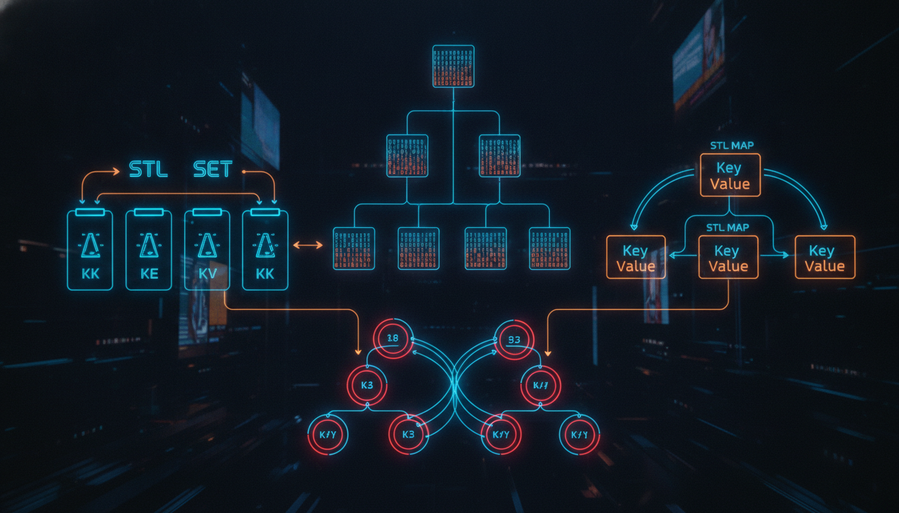

std::set, std::map, std::unordered_set, std::unordered_map

set — відсортована множина унікальних елементів, реалізована як червоно-чорне дерево.
#include <iostream>
#include <set>
int main() {
std::set<int> s;
s.insert(30);
s.insert(10);
s.insert(50);
s.insert(20);
s.insert(10); // Дублікат — ігнорується
std::cout << "Розмір: " << s.size() << std::endl; // 4
// Автоматичне сортування
for (int x : s) {
std::cout << x << " "; // 10 20 30 50
}
std::cout << std::endl;
// Пошук
if (s.find(30) != s.end()) {
std::cout << "30 знайдено!" << std::endl;
}
// Видалення
s.erase(20);
return 0;
}map — асоціативний масив (словник), що зберігає пари ключ-значення.
#include <iostream>
#include <map>
#include <string>
int main() {
std::map<std::string, int> scores;
scores["Ivan"] = 85;
scores["Maria"] = 92;
scores["Petro"] = 78;
// Доступ
std::cout << "Бал Івана: " << scores["Ivan"] << std::endl;
// Перевірка наявності
if (scores.count("Oleg") == 0) {
std::cout << "Олега немає в базі." << std::endl;
}
// Ітерація (відсортовано за ключем)
for (const auto& pair : scores) {
std::cout << pair.first << ": " << pair.second << std::endl;
}
return 0;
}